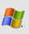
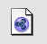
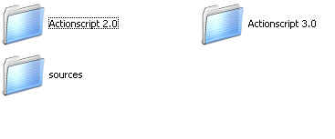
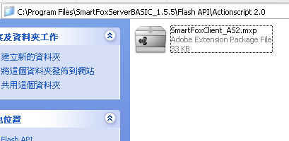

|  | Windows 98/ME/2000/XP/2003 (Installer) 的Windows 98/ME/2000/XP/2003 （安裝） |
| Double click on the installer .exe file and follow the simple instructions.雙擊安裝程序。 exe文件，並按照簡單的指令。 Once the software is succesfully installed you will find a new folder in your Windows Start Menu called "SmartFoxServer Lite".一旦該軟件已成功安裝你會發現一個新的文件夾在您的Windows 開始菜單上所謂的“ SmartFoxServer建興” 。 From there you will be able to run the server, install the client components and view the sample applications.從那裡，你將能夠運行的服務器，安裝客戶端組件，並查看示例應用程序。 An uninstaller is provided to completely remove the software. Uninstaller是一個提供完全刪除該軟件。 |
| Linux, Unix and Mac OS X (.tar.gz) Linux ， Unix 和Mac OS X的（ 。 tar.gz中解開） |
| To unpack the software open a terminal window and move to the folder where you have downloaded the file.打開軟件打開一個終端窗口，並移動到文件夾中下載文件。 Type " gzip -d SmartFoxServerLite.tar.gz " to extract the .tar file鍵入“ gzip或三維SmartFoxServerLite.tar.gz ”提取。 tar文件 Type " tar xf SmartFoxServer.tar " to extract the files.鍵入“ 焦油芳SmartFoxServer.tar ” ，以解壓縮文件。 Go in the "SmartFoxServerLite/Server" folder and launch the "start.sh" shell file to start the server.走“ SmartFoxServerLite /服務器”文件夾，並發射“ start.sh ”空殼文件以啟動服務器。 The "start.sh" should have the execution permissions set.該“ start.sh ”應該有執行權限設置。 In case you have problems launching it try setting the permissions like this: " chmod +x start.sh "如果你有問題，它試圖發起的權限設置這樣的： “ 搭配chmod + x的start.sh ” |
| Installing Java 安裝的Java |
| Please verify if you already have the Java Runtime Environment (JRE) version 1.4.2 or higher, installed in your system.請確認如果您已經有Java運行時環境（ JRE ）版本1.4.2或更高版本，安裝在您的系統。 If you need to upgrade please follow this link如果您需要升級，請按照此連結 |
| Installing SmartFoxClient API for Flash |
Go in your installation folder and open the "API Components" directory.  Actionscript2.0資料夾點進去便有擴充元件檔案,安裝 
» flash_mx2004:
Double click the appropriate file and follow the simple instructions to install the component. After the installation you will be able to use the client API by adding this line of code at the very beginning of your Actionscript:
若是Adobe Flash Cs3 擴充元件已經有了 |